Chapter 02: The Basic Structures:Sets,Functions,Sequences,Sums and Matrices¶
Sets¶
Some Concepts of Set Theory¶
- 集合（Sets）：一个无序的对象的聚集（一般用大写字母来标记）
- 元素（Elements）/ 成员（Members）：在集合中的对象（一般用小写字母来标记）
- 我们称集合包含（Contain）它的元素
- 空集（The Empty/Void/Null Set）：没有元素的集合（一般用 \(\phi\) 或 \(\{\}\) 表示）
- 单元素集（Singleton Set）：只有一个元素的集合
e.g. \(a \in A\) 表示 \(a\) 是 \(A\) 的一个元素/成员
\(a \not \in A\) 表示 \(a\) 不是 \(A\) 的一个元素/成员
注意 \(\phi\) 和 \(\{\phi\}\) 是不一样的，前者为空集，后者为单元素集
The Description of Set¶
Roster Method¶
花名册方法（Roster Method）：当集合元素有限时，列举集合中所有的元素。
e.g. 小于 \(10\) 的奇数所组成的集合 \(S=\{1,3,5,7,9\}\)
Set Builder¶
集合构造器（Set Builder）：通过描述作为集合的成员必须具有的性质来刻画集合中的元素。
e.g. 小于 10 的奇数所组成的集合 \(S=\{x|x=2k+1(k=0,1,2,3,4)\}\)
Venn Diagrams¶
在韦恩图当中，用矩形框表达全集（Universal Set，包含所考虑的全部对象），用圆或者其他几何图形来表达集合，用点来表达集合中的特定元素。
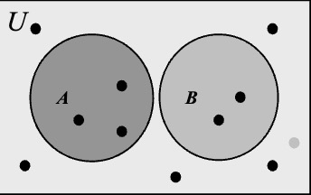
Subsets¶
当集合 \(A\) 中的每一个元素都是集合 \(B\) 中的元素，称 \(A\) 是 \(B\) 的一个子集（Subsets），用 \(A \subseteq B\) 来表示。（\(A \subseteq B \Leftrightarrow \forall x (x \in A \rightarrow x \in B)\)）
对于任意集合 \(A\) ，空集 \(\phi \subseteq A\)，其自身 \(A \subseteq A\)
证明 \(A\) 是 \(B\) 的子集：如果要证明 \(A \subseteq B\)，需要证明如果 \(x\) 属于 \(A\) 那么 \(x\) 也属于 \(B\)
证明 \(A\) 不是 \(B\) 的子集：如果要证明 \(A \not \subseteq B\)，需要找一个 \(x \in A\) 使得 \(x \not \in B\)
Equal¶
当集合 \(A\) 和集合 \(B\) 含有相同的元素，称 \(A\) 和 \(B\) 是相等（Equal）的，用\(A=B\) 来表示。（\(A=B \Leftrightarrow \forall x[(x \in A \rightarrow x \in B) \land (x \in B \rightarrow x \in A)] \Leftrightarrow (A \subseteq B) \land (B \subseteq A)\)）
Proper Subsets¶
当集合 \(A\) 中的每一个元素都是集合 \(B\) 中的元素，但是集合 \(B\) 中含有其他不属于 \(A\) 的元素，称 \(A\) 是 \(B\) 的一个真子集（Proper Subsets），用 \(A \subset B\) 来表示。（\(A \subset B \Leftrightarrow \forall x [(x \in A \rightarrow x \in B) \land \exists x(x \in B \land x \not \in A)] \Leftrightarrow (A \subseteq B) \land (A \not = B)\)）
The Size of a Set¶
对于集合 \(S\)，如果 \(S\) 中恰好含有 \(n\) 个不同的元素（\(n\) 为非负整数），那么我们称 \(S\) 是一个有限集，\(n\) 是 \(S\) 的基数（Cardinality），记为 \(|S|=n\)
Power Sets¶
对于一个集合 \(S\) ，它的幂集（Power Sets）是它所有子集的集合，记为 \(P(S)=\{x|x \subseteq S\}\)
其性质如下：
- \(|S|=n \Leftrightarrow |P(S)|=2^n\)
- 如果 \(S\) 是一个有限集，那么 \(P(S)\) 也是一个有限集。
- \(x \in P(S) \Rightarrow x \subseteq S\)
- \(x \in S \Rightarrow \{x\} \in P(S)\)
- \(S \in P(S)\)
e.g.1. 求 \(\{\phi\}\) 和 \(\{\phi,\{\phi\}\}\) 的幂集。
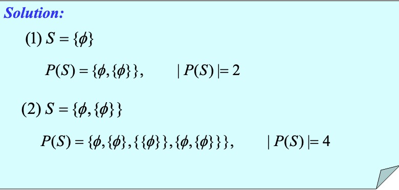
e.g.2. 证明 \(P(A) \in P(B) \Rightarrow A \in B\)
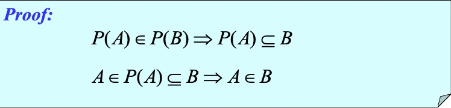
Cartesian Products¶
以 \(a_1\) 为第一个元素，\(a_2\) 为第二个元素，...，\(a_n\) 为第 \(n\) 个元素的有序聚集被称为有序 \(n\) 元组（Ordered n-tuple），用 \((a_1,a_2,...,a_n)\) 表示。特别地，若 \(n=2\)，二元组被称为序偶（Ordered Pair）。
\((a_1,a_2,...,a_n)=(b_1,b_2,...,b_n) \Leftrightarrow a_i=b_i(i=1,2,...,n)\)
令 \(A\) 和 \(B\) 为集合，\(A\) 和 \(B\) 的笛卡尔积（Cartesian Products）用 \(A\times B\) 表示，其中 \(A \times B=\{(a,b)|a \in A \land b \in B\}\)
更一般地，\(A_1\times A_2\times...\times A_n=\{(a_1,a_2,...,a_n)|a_i \in A_i(i=1,2,...,n)\}\)
其性质如下：
- 若 \(|A|=m,|B|=n\)，那么 \(|A\times B|=|B\times A|=mn\)
- \(A\times B \not =B\times A\)
- \(A\times \phi=\phi \times A=\phi\)
- \((x,y)\in A \times B \Rightarrow x \in A \land y \in B\)
- \((x,y)\not \in A \times B \Rightarrow x \not \in A \lor y \not \in B\)
e.g. \(A=\{a,b\},B=\{0,1,2\}\)，求 \(A\times B,B\times A\)
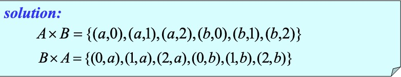
Using Set Notation with Quantifiers¶
\(\forall x \in S(P(x)) \Leftrightarrow \forall x(x \in S \rightarrow P(x))\)
\(\exists x \in S(P(x))\Leftrightarrow \exists x(x\in S \land P(x))\)
Truth Sets of Quantifiers¶
给定谓词 \(P\) 和定义域 \(D\) ，定义 \(P\) 的真值集（Truth Sets）为 \(D\) 中使 \(P(x)\) 为真的元素 \(x\) 组成的集合，记为 \(\{x \in D|P(x)\}\)
\(\forall xP(x)\) 如果在定义域 \(U\) 上为真，等价于其真值集为 \(U\)；\(\exists xP(x)\) 如果在定义域 \(U\) 上为真，等价于其真值集不为空。
Set Operations¶
Union¶
对于集合 \(A\) 和 \(B\)，其并集（Union）是一个包含 \(A\) 或 \(B\) 中或同时在 \(A\) 和 \(B\) 中的元素的集合，用 \(A \bigcup B\) 来表示。（\(A \bigcup B=\{x|x\in A \lor x \in B\}\)）
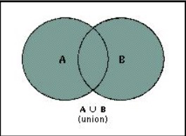
其性质如下：
- \(A\subseteq A \bigcup B,B\subseteq B \bigcup A\)
- \(A\subseteq C,B\subseteq C \Rightarrow A \bigcup B \subseteq C\)
- \(|A\bigcup B|\leq |A|+|B|\)
- \(A \bigcup B=B \Leftrightarrow A \subseteq B\)
Intersection¶
对于集合 \(A\) 和 \(B\)，其交集（Intersection）是一个包含同时在 \(A\) 和 \(B\) 中的元素的集合，用 \(A \bigcap B\) 来表示。（\(A \bigcap B=\{x|x\in A \land x \in B\}\)）
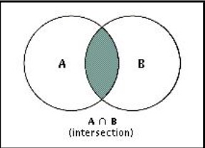
当两个集合的交集是一个空集时，称这两个集合是不相交的（Disjoint）（即 \(A\bigcap B=\phi\)）
其性质如下：
- \(A \bigcap B \subseteq A,A \bigcap B \subseteq B\)
- \(C\subseteq A,C\subseteq B\Rightarrow C\subseteq A \bigcap B\)
- \(|A\bigcap B|\leq |A|,|A\bigcap B|\leq |B|\)
- \(A\bigcap B=A\Leftrightarrow A \subseteq B\)
Complement¶
令 \(U\) 为全集，\(A\) 的补集（Complement）为在全集中不属于 \(A\) 的元素的集合，用 \(\overline A\) 来表示。（\(\overline A=\{x|x\not \in A,x \in U\}=\{x|\neg x \in A\}\)）
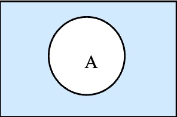
Difference¶
对于集合 \(A\) 和 \(B\)，\(A\) 与 \(B\) 的差集（Difference）是一个包含属于 \(A\) 但不属于 \(B\) 的元素的集合，用 \(A-B\) 来表示，也被称为 \(B\) 相对于 \(A\) 的补集。（\(A-B=\{x|x\in A \land x \not \in B\}=A \bigcap \overline B\)）
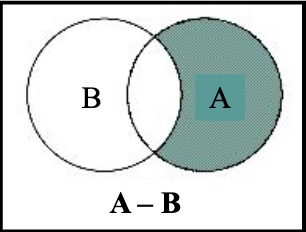
Symmetric Difference¶
对于集合 \(A\) 和 \(B\)，\(A\) 与 \(B\) 的对称差（Symmetric Difference）是一个包含属于 \(A\) 但不属于 \(B\) 和属于 \(B\) 但不属于 \(A\) 的元素的集合，用 \(A\oplus B\) 来表示。（\(A\oplus B=\{x|(x\in A \land x \not \in B) \lor (x\in B \land x \not \in A)\}=(A \bigcup B)-(A \bigcap B)\)）
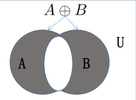
The Principle of Inclusion-Exclusion¶
容斥原理（The Principle of Inclusion-Exclusion）：\(|A \bigcup B|=|A|+|B|-|A \bigcap B|\)
更一般地：
\(|A_1\bigcup A_2\bigcup ... \bigcup A_n|=\sum\limits _{i=1} ^n|A_i|-\sum\limits _{1\leq i<j \leq n}|A_i \bigcap A_j|\\+\sum\limits _{1\leq i<j<k \leq n}|A_i\bigcap A_j\bigcap A_k|+...+(-1)^{n-1}|A_1\bigcap A_2\bigcap ... \bigcap A_n|\)
Set Identities¶
| Name | identity |
|---|---|
| Identity laws （恒等律） |
\(A \bigcup \phi=A\) \(A \bigcap U=A\) |
| Domination laws （支配律） |
\(A \bigcup U=U\) \(A \bigcap \phi=\phi\) |
| Idempotent laws （幂等律） |
\(A \bigcup A=A\) \(A \bigcap A=A\) |
| Complementation law （补律） |
\(\overline{\overline A}=A\) |
| Commutative laws （交换律） |
\(A \bigcup B=B \bigcup A\) \(A \bigcap B=B\bigcap A\) |
| Associative laws （结合律） |
\(A \bigcup (B \bigcup C)=(A \bigcup B)\bigcup C\) \(A \bigcap (B \bigcap C)=(A \bigcap B)\bigcap C\) |
| Distributive laws （分配律） |
\(A \bigcap (B \bigcup C)=(A \bigcap B) \bigcup (A \bigcap C)\) \(A \bigcup (B \bigcap C)=(A \bigcup B) \bigcap (A \bigcup C)\) |
| De Morgan's laws （德摩根定理） |
\(\overline{A \bigcup B}=\overline A \bigcap \overline B\) \(\overline{A \bigcap B}=\overline A \bigcup \overline B\) |
Generalized Unions and Intersections¶
令 \(A_1,A_2,...,A_n\) 为一系列已标号的集合，定义：
\(\stackrel{n}{\underset{i=1}{\bigcup}}A_i=A_1 \bigcup A_2 \bigcup ... \bigcup A_n\)（其中\(\stackrel{n}{\underset{i=1}{\bigcup}}A_i\) 包括的元素属于这一系列集合中至少一个集合）
\(\stackrel{n}{\underset{i=1}{\bigcap}}A_i=A_1 \bigcap A_2 \bigcap ... \bigcap A_n\)（其中\(\stackrel{n}{\underset{i=1}{\bigcap}}A_i\) 包括的元素属于这一系列所有集合）
Computer Representation of Set¶
在计算机中，用比特串（Bit String）来表示集合，设全集 \(U\) 是一个有限集（而且大小合适，使 \(U\) 的元素个数不超过计算机能使用的内存量）。为 \(U\) 的元素任意规定一个顺序，例如 \(a_1,a_2,...,a_n\)。于是可以用长度为 \(n\) 的比特串来表示 \(U\) 的子集 \(A\)，其中如果 \(a_i \in A\)，比特串中第 \(i\) 位是 1，否则为 0。
Functions¶
Introduction¶
定义：令 \(A\) 和 \(B\) 为非空集合，从 \(A\) 到 \(B\) 的函数（Functions） \(f\) 是对元素的一种指派，对 \(A\) 的每一个元素恰好指派 \(B\) 的一个元素。如果 \(B\) 中的元素 \(b\) 是唯一由 \(A\) 中的元素 \(a\) 经函数 \(f\) 指派的，那么我们就写为 \(f(a)=b\) 。如果 \(f\) 是从 \(A\) 到 \(B\) 的函数，就写为 \(f:A\rightarrow B\)。
函数有时也被称为映射（Mapping） 或者变换（Transformation）。
一个函数 \(f:A\rightarrow B\) 也可以被定义为集合 \(A \times B\) 的子集。如果对于每一个元素 \(a \in A\) 都有且仅有一个序偶 \((a,b)\) ，那么它就定义了 \(A\) 到 \(B\) 的一个函数 \(f\)。这个函数可以写作 \(f(a)=b\) 。其中这个子集满足对于序偶 \((a,b)\)，子集中有且仅有这一个以 \(a\) 为第一个元素的序偶。
用逻辑表达式来表述：\((\forall x[x\in A \rightarrow \exists y[y \in B \land (x,y)\in f]]) \land (\forall x,y_1,y_2[[(x,y_1)\in f \land (x,y_2)\in f]\rightarrow y_1=y_2])\)
如果 \(f\) 是从 \(A\) 到 \(B\) 的函数，我们称 \(f\) 把 \(A\) 映射到 \(B\) 或者 \(f\) 是从 \(A\) 到 \(B\) 的映射。其中 \(A\) 被称为 \(f\) 的定义域（Domain），\(B\) 被称为 \(f\) 的陪域（Codomain）。如果 \(f(a)=b\)，那么 \(b\) 被称为 \(a\) 在映射 \(f\) 下的像（Image），\(a\) 被称为 \(b\) 的原像（Preimage）。\(A\) 中所有元素的像的集合被称为 \(f\) 的值域（Range），记作 \(f(A)\)。
如果两个函数含有相同的定义域，相同的值域，定义域中的每个元素映射到陪域中相同的元素时，称这两个函数是相等（Equal）的。
令函数 \(f_1\) 和 \(f_2\) 是从 \(A\) 到 \(\R\) 的映射，定义 \(f_1+f_2\) 和 \(f_1f_2\) ： $$ (f_1+f_2)(x)=f_1(x)+f_2(x)\ (f_1f_2)(x)=f_1(x)f_2(x) $$ 令函数 \(f\) 是从 \(A\) 到 \(B\) 的映射，\(S\) 是 \(A\) 的一个子集，那么 \(S\) 的像就是 \(B\) 的一个子集（其中包含 \(S\) 中元素的像），记作 \(f(S)\) （这是一个集合而非一个值！）。那么有表达式 \(f(S)=\{f(s)|s\in S\}\) 。
One-to-one Functions¶
一个从 \(A\) 到 \(B\) 的函数 \(f\) 被称为是一对一（One-to-one）或单射（Injection/Injective）函数，当且仅当对于 \(f\) 定义域中所有的 \(a\) 和 \(b\) ，当 \(f(a)=f(b)\) 时有 \(a=b\)。（即对于函数陪域中的有原像的元素 \(b\) ，它的原像是唯一的）
用逻辑表达式来表述：\(\forall a\forall b(a\in A \land b \in A \land (f(a)=f(b)\rightarrow a=b))\)，\(\forall a\forall b(a\in A \land b \in A \land (a\not= b \rightarrow f(a)\not=f(b)))\)
一个函数是：
- 递增的：\(\forall x\forall y(x<y \rightarrow f(x)\leq f(y))\)
- 严格递增的：\(\forall x \forall y(x<y \rightarrow f(x)<f(y))\)
- 递减的：\(\forall x \forall y(x<y\rightarrow f(x)\geq f(y))\)
- 严格递减的：\(\forall x\forall y(x<y \rightarrow f(x)>f(y))\)
Onto Functions¶
一个从 \(A\) 到 \(B\) 的函数 \(f\) 被称为是映上（Onto）或满射（Surjection/Surjective）函数，当且仅当对每个 \(b\in B\) 有元素 \(a\in A\) 使得 \(f(a)=b\)。（即对于函数陪域中的每个元素 \(b\)，它都存在原像）
用逻辑表达式来表述：\(\forall b(b\in B\rightarrow \exists a(a\in A \land f(a)=b))\)
One-to-one Correspondence Functions¶
如果一个函数 \(f\) 既是一对一的又是映上的，那么称这个函数是一一对应（One-to-one Correspondence）或双射（Bijection/Bijective）函数。
如果从 \(A\) 到 \(B\) 的函数 \(f\) 是双射函数，那么集合 \(A\) 和 \(B\) 含有相同的元素个数或者相同的基数。
假设 \(f:A\rightarrow B\)：
- 要证明 \(f\) 是单射的：证明对于任意 \(x,y\in A\)，如果 \(f(x)=f(y)\)，则 \(x=y\)
- 要证明 \(f\) 不是单射的：找到特定的 \(x,y\in A\)，使得 \(x\not= y\) 且 \(f(x)=f(y)\)
- 要证明 \(f\) 是满射的：考虑任意元素 \(y\in B\)，并找到一个元素 \(x\in A\) 使得 \(f(x)=y\)
- 要证明 \(f\) 不是满射的：找到一个特定的 \(y\in B\)，使得对于任意 \(x\in A\) 有 \(f(x)\not=y\)
Inverse Functions¶
令 \(f\) 为从集合 \(A\) 到集合 \(B\) 的一一对应（只有一一对应才有反函数！）。\(f\) 的反函数/逆函数（Inverse Functions）将 \(B\) 中的元素 \(b\) 指派给 \(A\) 中的唯一元素 \(a\)（满足 \(f(a)=b\)），用 \(f^{-1}\) 来表示。（即 \(f(a)=b\) 时，\(f^{-1}(b)=a\)）
Some Important Functions¶
向下取整函数（Floor Function）\(f(x)=\lfloor x \rfloor\) 表示小于等于 \(x\) 的最大整数（一般也被称为取整函数，也可记为 \(f(x)=[x]\)）。
向上取整函数（Ceiling Function）\(f(x)=\lceil x \rceil\) 表示大于等于 \(x\) 的最小整数。
其性质如下：
- \(\lfloor x \rfloor =n \Leftrightarrow x-1<n \leq x<n+1(n \in \Z)\)
- \(\lceil x \rceil =n \Leftrightarrow n-1<x\leq n<x+1(n \in \Z)\)
- \(x-1<\lfloor x \rfloor\leq x \leq \lceil x \rceil <x+1\)
- \(\lfloor -x \rfloor=-\lceil x \rceil\)
- \(\lceil -x \rceil=-\lfloor x \rfloor\)
- \(\lfloor x+m\rfloor=\lfloor x\rfloor+m(m\in \Z)\)
- \(\lceil x+m \rceil=\lceil x \rceil+m(m\in \Z)\)
Sequences and Summations¶
Sequences¶
序列（Sequence）是一个从整数集的的一个子集（通常为集合 \(\{0,1,2,3,4,...\}\) 或集合 \(\{1,2,3,4,...\}\) 到一个集合 \(S\) 的函数。用记号 \(a_n\) 表示整数 \(n\) 的像，称其为序列的一个项（Term），用记号 \(\{a_n\}\) 来表示序列。
Some Famliar Sequences¶
几何级数是形式如 \(a,ar,ar^2,...,ar^n,...\) 的序列（其中初始项 \(a\) 和公比 \(r\) 都是实数）。
算数级数是形式如 \(a,a+d,a+2d,...,a+nd,...\) 的序列（其中初始项 \(a\) 和公差 \(d\) 都是实数）。
Strings¶
有穷序列也被称为串（Strings），可以被记为 \(a_1a_2...a_n\) ，串的长度是这个串的项数。空串是没有任何项的串，记作 \(\lambda\) ，其长度为 0。
Recurrence Relation¶
关于序列 \(\{a_n\}\) 的递推关系（Recurrence Relation）是一个等式，对所有满足 \(n \geq n_0\) 的 \(n\) ，它把 \(a_n\) 用序列中前面的项，即 \(a_0,a_1,...,a_{n-1}\) 的一项或多项来表示，其中 \(n_0\) 是一个非负整数。
如果一个序列的项满足递推关系，则该序列被称为是递推关系的一个解（Solution）
一个序列的初始条件（Initial Conditions）规定了在递推关系定义的首项前的那些项。
Cardinality of Sets¶
Cardinality¶
集合 \(A\) 和集合 \(B\) 有相同的基数（Cardinality）\(\Leftrightarrow\) 存在从 \(A\) 到 \(B\) 的一个一一对应，记为 \(|A|=|B|\)
e.g. 令集合 \(A\) 为 \((a,b)\) 之间所有的实数 \((a<b)\) ，集合 \(B\) 为 \((0,1)\) 之间所有的实数，证明 \(|A|=|B|\) 。
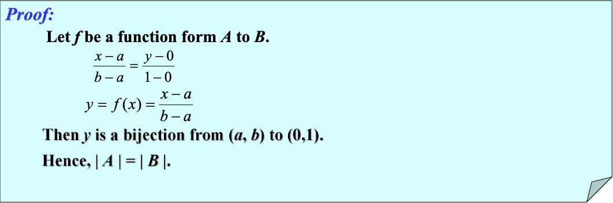
如果存在一个从 \(A\) 到 \(B\) 的一对一函数，则 \(A\) 的基数小于等于 \(B\) 的基数，记为 \(|A|\leq |B|\) ，如果 \(A\) 和 \(B\) 有不同的基数时，\(A\) 的基数小于 \(B\) 的基数，记为 \(|A|<|B|\)
Countable Sets¶
如果一个集合是有限集或者与自然数集具有相同的基数，那么这个集合就被称为可数的（Countable），否则这个集合就被称为不可数的（Uncountable）。
当一个无限集 \(S\) 是可数的，我们用符号 \(\aleph_0\) 来表示集合 \(S\) 的基数，记为 \(|S|=\aleph_0\) ，并且称 \(S\) 有基数“阿里夫零”。
一个无限集是可数的 \(\Leftrightarrow\) 可以把集合中的元素排列成序列（以正整数为下标）。
Uncountable Sets¶
定理：
-
\((0,1)\) 中所有的实数组成的集合是不可数的，更一般地，实数集 \(\R\) 是不可数的。
-
任何含有不可数的子集的集合是不可数的
- \(|\R|=\aleph\)
- 不存在一个无限集，其基数比可数集小。
- 两个可数集的并集也是可数的。
e.g. 证明 \(|(0,1)|=|[0,1]|\)
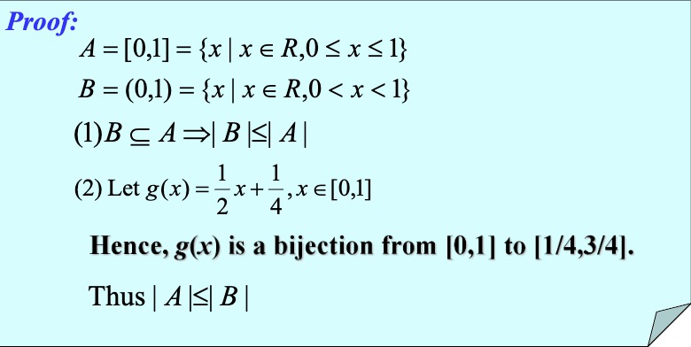
Uncomputable Function-An Important Application in CS¶
定义：如果存在某种编程语言写的计算机程序能计算一个函数的值，那么这个函数被称为是可计算的（Computable），否则被称为是不可计算的（Uncomputable）
Continuum Hypothesis¶
康托尔定理：一个集合的基数总是小于其幂集的基数
连续统假设： \(|P(Z^+)|=|R|=c\)，不存在介于 \(\aleph_0\) 和 \(c\) 的基数。即不存在一个集合，它的基数比正整数集合的基数大，又比实数集集合的基数小。
Matrices¶
基本与线性代数相同，主要的新概念有 0-1 矩阵。
Zero-One Matrices¶
所有元素非 0 即 1 的矩阵称为 0-1矩阵（Zero-One Matrices）。
令 \(A=[a_{ij}]\) 和 \(B=[b_{ij}]\) 为 \(m\times n\) 阶 0-1 矩阵。\(A\lor B\) 是 0-1 矩阵，其 \((i,j)\) 元素为 \(a_{ij}\lor b_{ij}\)。\(A\land B\) 是 0-1 矩阵，其 \((i,j)\) 元素是 \(a_{ij}\land b_{ij}\) 。
令 \(A=[a_{ij}]\) 为 \(m\times k\) 阶 0-1 矩阵，\(B=[b_{ij}]\) 为 \(k\times n\) 阶 0-1 矩阵。\(A\) 和 \(B\) 的布尔积记作 \(A\bigodot B\) ，是 \(m\times n\) 矩阵 \([c_{ij}]\) ，其中 \(c_{ij}=(a_{i1}\land b_{1j})\lor (a_{i2}\land b_{2j}) \lor ... \lor (a_{ik}\land b_{kj})\)
令 \(A\) 为 0-1 方阵，\(r\) 为正整数。\(A\) 的 \(r\) 次布尔幂记作 \(A^{[r]}\) ，\(A^{[r]}=\underbrace{A\bigodot A\bigodot A\bigodot ... \bigodot A}_{(r个A)}\)